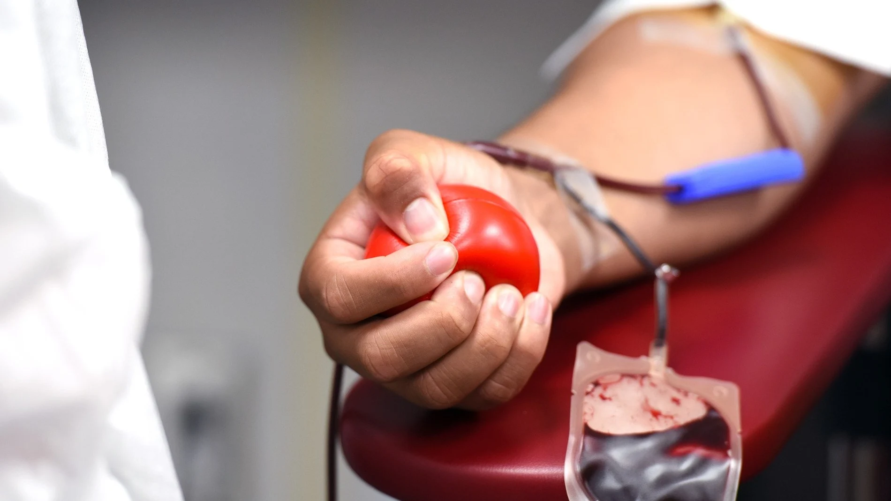

DONACIONES DE SANGRE
¿Por qué donar sangre?
Hay tres motivos.
La sangre no se puede fabricar.
Es impresdincible en operaciones.
Caduca y no se puede almacenar para siempre.
¿Qué requisitos hay para donar sangre?
No todo el mundo puede donar sangre, hay ciertos requisitos necesarios para poder donar sangre, tranquilo, te los indicamos aquí:

Tener entre 18 y 65 años.
Pesar más de 50kg debido a la cantidad de sangre extraida (alrededor de 500ml).
Cumplir al menos dos meses de recuperación desde la última donación de sangre.
No superar el máximo de donaciones anuales, siendo 4 para el hombre y 3 para la mujer.
¿Y cumplo todo, puedo donar?
¡Enhorabuena, ya casi cumples todo para donar sangre!
Ahora, te indicaremos los requisitos que NO debes cumplir para poder donar sangre.
Si padeces alguna enfermedad que puedas transmitir, no serás apto.
Tampoco si has consumido drogas por via intramuscular o venoso alguna vez.
En caso de los diabéticos, tampoco podran los insulinodependientes.
Padecer enfermedades graves no permitirá, si desconoces si tu enfermdad esta incluida, no dudes en preguntar a tu médico de cabecera.
Si tienes un tratamiento crónico, pregunta a tu médico de cabecera antes de donar, ya que esta podria tener efectos sobre tu sangre que no permiten que seas donante.
¿Y si no sé si tengo problemas graves?
Tranquilo, antes de donar te hacen pruebas básicas: Tensión arterial, Frecuencia cardíaca, Saturacion de oxígeno y estimación de Hb en sangre.
Pero, ¿Dónde va nuestra sangre?
Como ya hemos visto anteriormente, depende de tu grupo sanguíneo, será para una persona u otra.
Aqui tienes un pequeño recordatorio de los grupos sanguíneos y sus compatibilidades.